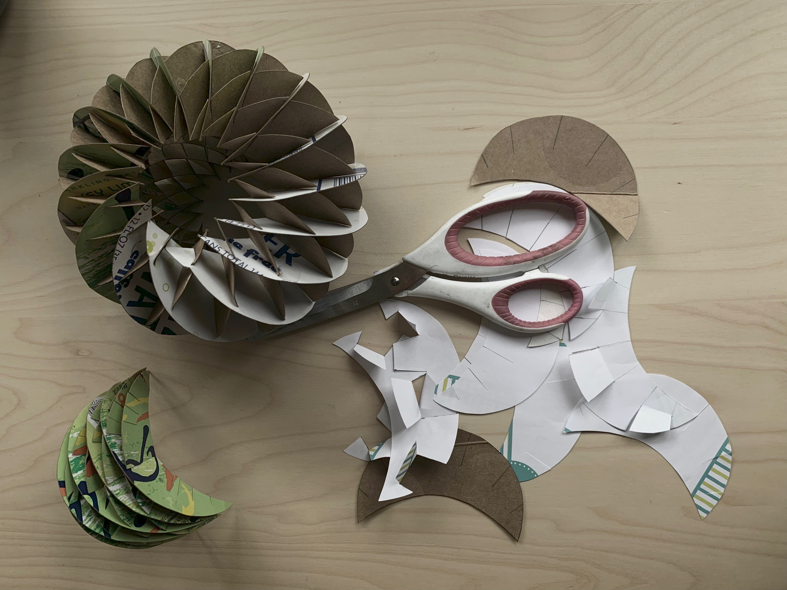
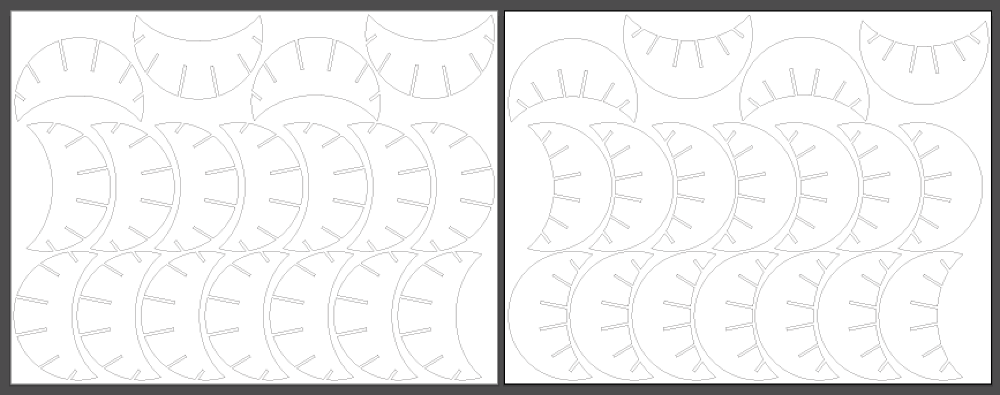

A1: Laser Cut Press Fit Construction Kit!
by Kellie Dunn for HCDE 598
Here is my finished and assembled Press Fit Kit:

I saw a picture on the internet of a cardboard construction that looked like a bundt cake.
I thought I'd try to recreate it with more pieces.
My kit contains 16 each of two types of piece.
I started by making a paper prototype using an old beverage can box, pencil, and scissors.
I made a few different styles of crescent shapes with slots until I found one that worked for the full circular design.

Once I had settled on designs for the shapes and slots, I scanned my pieces and used them as guides to recreate them in higher fidelity in Adobe Illustrator.
I measured my cardboard dimensions and width, sized the slots so they would fit snugly, and put as many pieces as I could on each piece of cardboard.
I cut a few extra pieces this way, in case I damaged any of them in assembly.
For printing, I made a separate file for each of my artboards (1 artboard for each style of piece).

On the laser cutter, I used the following settings: speed 40, power 100, freq 50.
I had to fiddle with the settings to get it running, but once it was dialed in, it worked great.
I did not have any fires or scorching!

I designed a challenging piece to assemble, but eventually got the whole thing together!

Documentation for Assignment 1:
Adobe Illustrator file
Acknowledgements:
Tyson for help with the laser printer!
Christa for moral support!
Random neighbor in my apartment building for leaving a pristine condition OfficeMax cardboard box in the recycling bin!